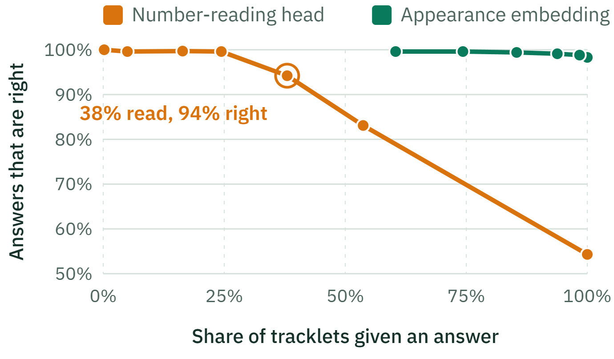

Backup · naming players
Shirt-number reader: what it says versus the truth
Models: ResNet-34 legibility check + PARSeq reader. SoccerNet Jersey test, 1,211 tracklets
true ↓ / reader says →
Reads the right number
Reads a different number
Says "not visible"
Number visible
(856)
629
73.5%
56
6.5%
171
20.0%
No number visible
(355)
41
11.5%
314
88.5%
Most misses are "not visible", not wrong numbers: only 56 of 856 readable tracklets get a wrong one.
One-digit numbers are read right 60% of the time, two-digit numbers 79%.
Accuracy against coverage
Model: fine-tuned CLIP ViT-B/16 identity model, 13,610 tracklets from 3 unseen games

Matrix: second run of the reader (77.9% overall; main run 80.3%) · curves: 3 FOOTPASS held-out games · PitchProfile · AAI3001
28